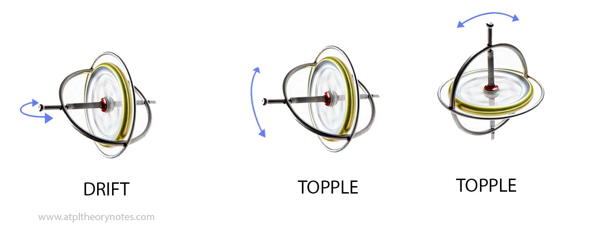
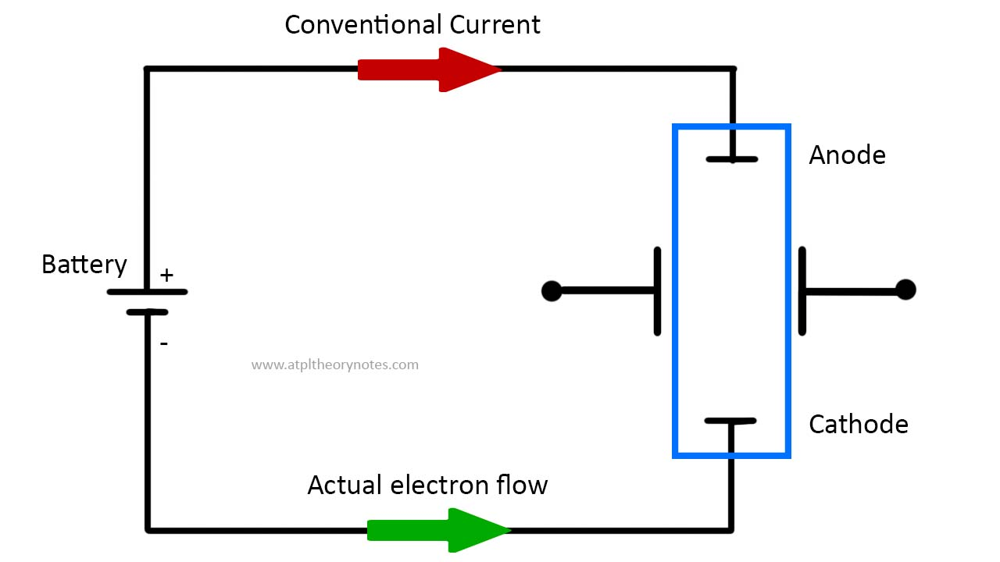

[OPS SAMPLE] Operational Procedures
· ICAO provides Standards and Recommended Practices (SARPs) to its member states, in the form of 19 annexes to the Chicago convention. However, recently, EASA has used those standard and recommended practices to form a basis for their European Union Operational legislation (EU-OPS)
DEFINITIONS
| Alternate aerodrome | An aerodrome to which an aircraft may proceed when it becomes impossible to land at the aerodrome of intended landing |
|---|---|
| Destination alternate | An alternate aerodrome to which an aircraft may proceed should it become impossible to land at the destination aerodrome |
| En-route alternate | An aerodrome at which an aircraft could land following an abnormal or emergency condition en-route |
| Take-off alternate | An aerodrome at which an aircraft could land if necessary shortly after take-off if it is not possible to return to the departure aerodrome |
| ETOPS en-route alternate | A suitable aerodrome at which an airplane would be able to land experiencing an engine shut down or any other abnormal emergency condition within the approved ETOPS max distance for that airplane type |
| Cabin crew member | A crew member who performs, in the interest of safety of passengers, duties assigned by the operator or the pilot-in-command of the aircraft, but who shall not act as a flight crew member |
| Flight crew member | A licensed crew member charged with duties essential to the operation of an aircraft during a flight duty period. |
| Commercial air transport operation | An aircraft operation involving the transport of passengers, cargo or mail for remuneration or hire. |
| Flight time (block time or chock to chock) | The total time from the moment an airplane first moves for the purpose of taking-off until the moment it finally stops at the end of the flight |
| Operating base | The location from which operational control is exercised. |
| Operational control | The exercise of authority over the initiation, continuation, diversion or termination of a flight in the interest of the safety of the aircraft and the regularity and efficiency of the flight |
| Operations manual | A manual containing procedures, instructions and guidance for use by operational personnel in the execution of their duties. |
| Operator | A person, organization or enterprise engaged in or offering to engage in an aircraft operation. |
| Safety management system | A systematic approach to managing safety, including the necessary organizational structures, accountabilities, policies and procedures. |
APPLICABILITY
· ICAO Annex 6 part 1 is applicable to international commercial air transport operations conducted by airplane.
- PIC has the final responsibility of complying with both, the rules of the Operator and the rules of the State where they are operating.
- Departure of the rules is only allowed if it's necessary in the interest of safety.
SAFETY MANAGEMENT
· A Safety Management System is a systematic approach to managing safety and controlling risks.
- The Safety Management Programme must identify threats, provide mitigations and continuously monitor the overall level of safety.
- The system includes the necessary organizational structures, accountabilities, policies and procedures.
- They are periodically audited
- ICAO recommends that airlines operating aircraft of more than 20.000 kg MTOW should establish a flight data analysis program as part of their SMS
- It becomes mandatory if aeroplanes greater than 27.000 kg MTOW are operated
· Safety Manager
- Manager should facilitate hazard identification
- Manager should provide periodic reports on safety performance
- The safety manager and a safety review board are responsible for flight safety
· Safety Review Board
- The board should be chaired by the accountable manager and be composed of heads of functional areas.
- The safety review board should ensure that appropriate resources are allocated to achieve the established safety performance.
- The purpose of the safety management board is to allocate resources
· Safety Action Group
- The SAG reports to and takes strategic direction from the Safety Review Board.
- It comprises managers, supervisors and staff from operational areas. The Safety Manager may also be included in the SAG
· Note that the safety management manual is not the same as the ops manual
MAINTENANCE RELEASE
· Maintenance release
- Airplanes being released from maintenance are issued and signed to certify the performed work.
- It's the responsibility of the PIC to check the documentation to confirm the airworthiness of the aircraft, before accepting it for operation.
· The maintenance release certificate contains:
- Basic details of the maintenance carried out (what)
- The date completed (when)
- The identity of the approved maintenance organization (where)
- The identity of the person signing the release (who)
[INSTRUMENTS SAMPLE] Gyroscopic principles
GYROSCOPIC PRINCIPLES
· Properties of a Gyroscope.
|  |
TERMINOLOGY
· Axis movement
- Wander: Any movement of the gyro spin axis away from its chosen direction
- Real wander: Imperfections and friction cause small rates of random precession. It can be considered a failure of the gyro to maintain its position.
- Apparent wander: A gyro seems to wander when the direction of its spin axis is compared with a datum that is moving.
- Topple: Movements of the gyro axis in the vertical plane
- Drift: Movements of the gyro axis in the horizontal plane. Can also be real or apparent (caused by aircraft transport)
- Horizontal axis rotors can topple and drift.
- Vertical axis rotors can only topple.

· Degrees of freedom
- Gyroscopes are classified according to their degrees of freedom
- "Degrees of freedom" means around how many axes we can MEASURE rotation (not that it can rotate, but that we can measure how much it's rotating)
- Therefore, the rotation axis is not accounted for, since we can not measure if that axis has been rotated (the gyro will just spin at 18000 RPM without you even noticing)
- Gyros need at least 1 gimbal for every degree of freedom that we want it to have.
- Gimbals are suspended rings that can rotate around an axis. Sometimes they are not circular but square, but the principle is the same.
- Rate gyros, for example, have 1 degree of freedom. Therefore, they need 1 gimbal.
- See the example image below.
- Axis z (not Z) is the rotation axis. This one doesn't count as a degree of freedom!
- Because there's one square gimbal, which is suspended, the gyro can rotate around the "x" axis. Therefore, it's a one degree of freedom gyroscope!

Image source: researchgate.net
{kind=link}
· Planes of movement
- From time to time, you will see that gyros are classified according to the "planes of movement" instead of the degrees of freedom
- Planes of movement means around how many axis the gyro is free to move
- In the case above, the gyro is free to move around the "z" axis and around the "x" axis
- Therefore, the gyro above has 2 planes of movements
- Note that this classification is not used by EASA, but you will may encounter it on some question banks
- Keep in mind that gyroscopes always have 1 more plane of movement than degrees of freedom. Again, this is because the gyro axis doesn't count as a degree of freedom.
GYROSCOPE TYPES
· Types of Gyroscopes.
- Space or Free Gyroscopes. Axis always points to the initial position in space. Not used in aviation
- Tied Gyroscope. Two degrees of freedom. The axis is always pointing to a particular direction and probably needing a correction mechanism (e.g, a gyroscope always pointing towards the centre of the Earth)
- Rate Gyroscope. One degree of freedom. Used in turn indicators for example
- Rate Integrating Gyroscope. One degree of freedom. Used in INS/IRS
ELECTRICAL GYROS
· Suction vs Electrical Gyros.
- Electrical Gyros can increase RPM, and be more reliable.
- Electrical Gyros do not depend on the density of the air.
- Electrical Gyros do not need complex cases to get rid of the contamination.
- Overall, electrical gyros are better but more expensive.
CORRECTION SYSTEMS
· Correction systems.
- Leveling system: Used to maintain a horizontal spin axis.
- The pilot is responsible for leveling the system by uncaging, correcting, caging, creating an air jet that induces precession to erect the gyro.
- Erection System: Used to maintain a vertical spin axis.
- If the spin axis moves away from the vertical, a system of pendulous vanes generates a jet force that erects the gyro
SUMMARY - RULE OF THUMB
| R | E | S | T |
| T | A | X | D |
| 1 | 2 | 2 | 2 |
| H | V | V | H |
- First row is gyro type: REST - Rate, Earth, Space, Tied
- Second row is the instrument that uses that gyro: TAXD - Turn Indicator, Artificial Horizon, X (not used), Directional Gyro
- Third row is the degrees of freedom
- Fourth row is the axis alignment: H V V H (horizontal or vertical axis)
LASER GYROS
· Modern IRS systems use laser gyros that have nothing to do with conventional gyros
- In fact, laser gyros don't have spinning rotors, but they perform the same tasks as rate integrating gyros that they have replaced
- For that, they use two beams of light. When rotating, one beam has to travel more distance than the other. But because they are already traveling at the speed of light and nothing can ever go faster than light, beams react changing their frequency.
- Only disadvantage is laser lock: at low rotational speeds, both beams tend to lock into the same frequency. Can be overcome by "dithering", which consists on oscillating the gyro rapidly about its sensitive axis.
[AGK ELECTRICS SAMPLE] Batteries
CELLS
· A cell is a series of negative and positive plates immersed in a liquid known as an electrolyte.
- They are built to convert chemical energy into electrical energy.
- Chemical reactions that occur inside cells cause electric current to flow.
· Types of cells
- Primary. Non rechargeable. Use and throw.
- Secondary. Rechargeable (e.g, lead-acid, nickel-cadmium, lithium)
TERMINOLOGY
· Current vs electron flow
- Conventional Current Flow assumes that current flows out of the positive terminal, through the circuit and into the negative terminal of the source. This was the convention chosen during the discovery of electricity, but time proved them to be wrong.
- Electron flow is what actually happens and electrons flow out of the negative terminal, through the circuit and into the positive terminal of the source.
- In fact, it makes no difference which way the electrons are flowing as long as it is used consistently.
| Anode | · Electrode through which conventional current enters into an electrical device (conventional flow). A common mnemonic is ACID, for "anode current into device" · Electrons are actually flowing out of the anode of a galvanic cell (electron actual flow) |
|---|---|
| Cathode | · Electrode from which conventional current leaves an electrical device (conventional flow). A common mnemonic is CCD, for "cathode, current departs". · Electrons are actually flowing into a device's cathode (electron actual flow) |
| Oxidation | The process of losing electrons |
| Reduction | The process of gaining electrons |

BATTERIES USED IN AVIATION
· In aviation, we use rechargeable batteries, which are made of secondary cells. The most typical batteries are the lead-acid battery, the nickel-cadmium and the lithium battery, used in modern aircraft.
· The Lead-Acid battery
- Usually made of 6 or 12 cells
- Each cell's voltage is 2.2V charged and 1.8 discharged.
- A charged 12 cell battery would provide a 26.4 voltage
- Anode: Spongy lead
- Cathode: Lead Peroxide
- Electrolyte: Sulfuric acid.
- Specific Gravity: 1'27 (charged) and 1.1 (discharged)
- Neutralizing agent: Bicarbonate of Soda
· Nickel-Cadmium battery
- Usually made of 20-22 cells
- Each cell's voltage is 1.2V charged and 1.1 discharged
- Anode: Cadmium
- Cathode: Nickel Oxide
- Electrolyte: Potassium Hydroxide.
- SG is always 1.26
- Neutralizing agent: Boric Acid
- Advantages of nickel-cadmium batteries
- More stable voltage until sudden drop
- Wider temperature range
- Less weight
- Quicker to charge
- Disadvantages
- Memory effect (reduces its capacity if not topped-off during recharge)
- Risk of thermal runaway
· Lithium ion batteries (used in B787 and A350)
- Anode and cathode store lithium
- Electrolyte carries positively charged lithium ions from the anode to the cathode and viceversa through a separator
- Advantages
- High energy density
- No memory effect
- Low self-discharge
- Disadvantages
- Hazardous since electrolyte is flammable
· Threats associated with aircraft batteries
- Thermal Runaway. When battery temperature increases, resistance decreases, risking overheat and fire. Some batteries are fitted with sensors to prevent this
- Battery leakage. Loss of electrolyte will prevent the battery from proper functioning
- Internal failures or short circuits
· Capacity of batteries
- Expressed in Ampere hours (Ah)
- A 40Ah battery can provide a 40 amps current during an hour, or a 80 Amp current during half an hour, for example.
· Charging methods: 2 main ways
- Constant Voltage: a voltage bigger than the battery's is connected. The charge rate is proportional to the voltage difference.
- Pulse Charging: A DC current is supplied until battery is fully charged; then, pulse DC to keep it topped up.
· Connection of several batteries
- In series: Voltage is added
- In parallel: Current is added
EMERGENCY USE
· If power supply is lost, batteries must be able to provide:
- Main batteries must supply the aircraft for 30 minutes
- Emergency lighting batteries must last for at least 10 minutes.